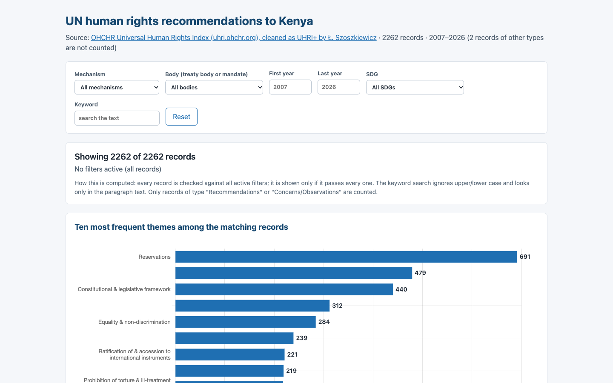
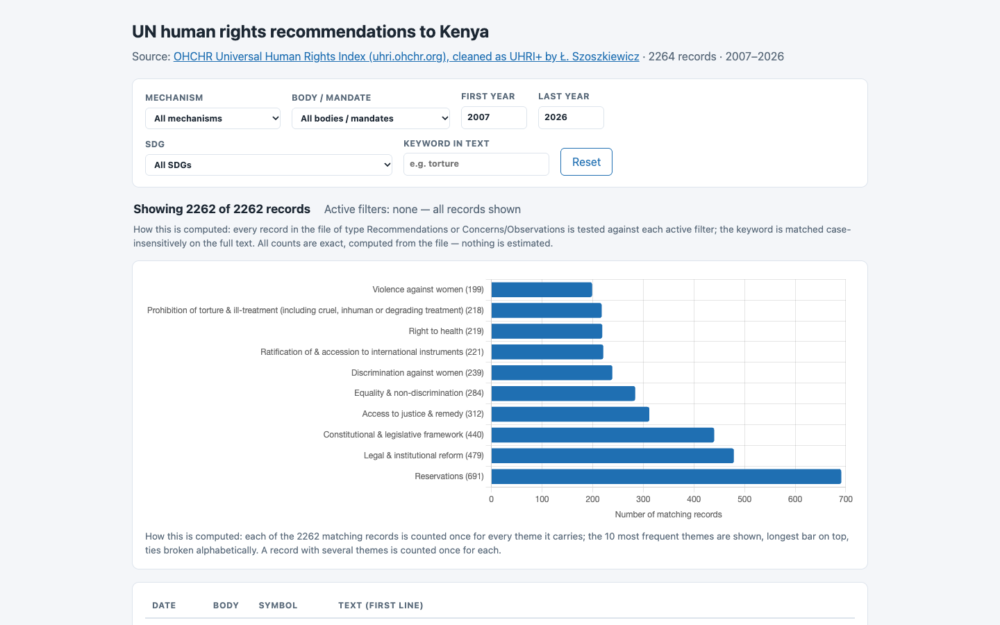
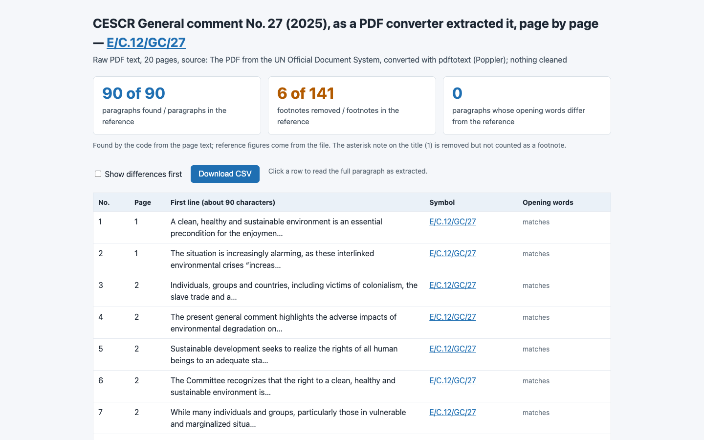
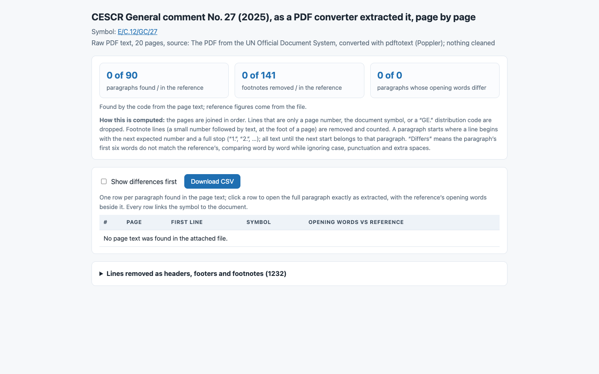
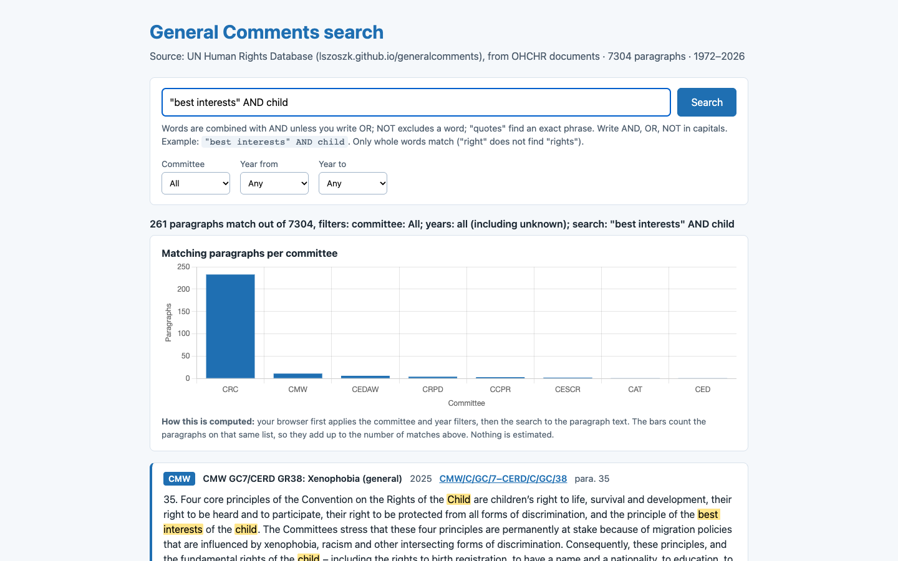
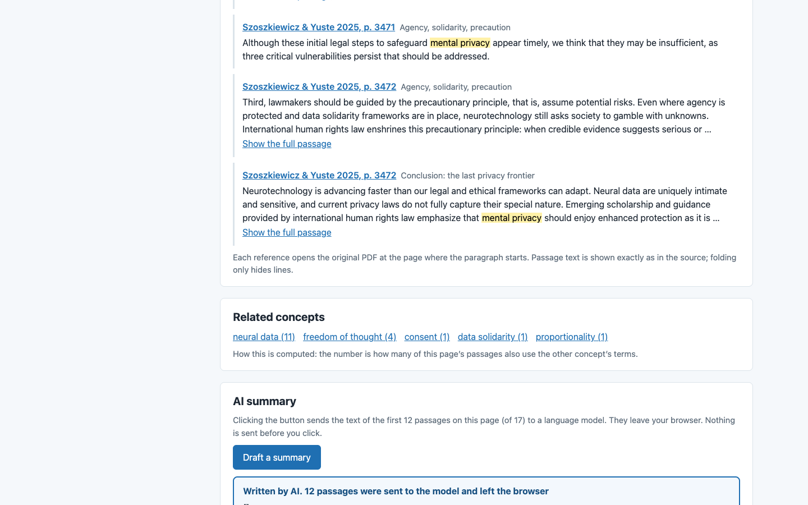
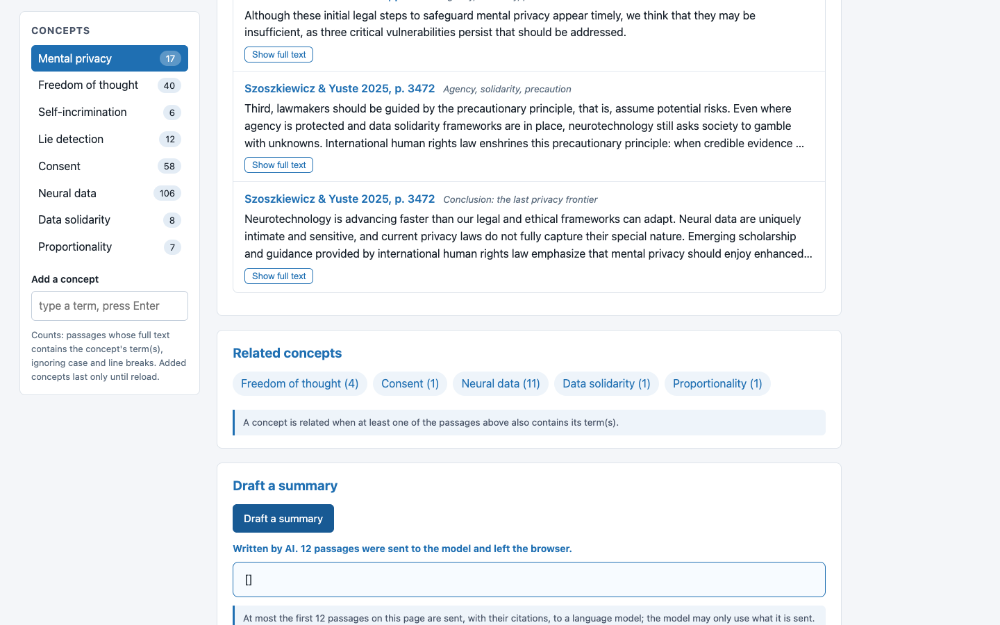

8/8 · 56.1 s · $0.130 · 357 lines
all checks passed

8/8 · 109.6 s · $0.044 · 453 lines
all checks passed

6/6 · 93.4 s · $0.173 · 260 lines
all checks passed

5/6 · 221.2 s · $0.080 · 280 lines
table_min_rows

8/8 · 55.8 s · $0.125 · 295 lines
all checks passed

0/8 · 63.3 s · $0.028 · 0 lines
no_console_errors, no_network, uses_workshop_data, chart, search_box, button_matches, source_matches, text_contains_after_search

8/8 · 82.5 s · $0.164 · 320 lines
all checks passed

8/8 · 139.0 s · $0.055 · 389 lines
all checks passed